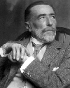

Biblioterapia
Rafał Miętkiewicz
Lord Jim - Joseph Conrad
 Książka ta opowiada o losach młodego żeglarza, Jima, który przez większość swojego życia marzył o dokonaniu heroicznego czynu.
Książka ta opowiada o losach młodego żeglarza, Jima, który przez większość swojego życia marzył o dokonaniu heroicznego czynu.
„... jego myśli pochłonięte były wielkimi czynami; uwielbiał takie sny na jawie i swe urojone czyny. Były one najlepszą cząstką życia, jego najgłębszą prawdą, jego ukrytą rzeczywistością. Miały w sobie wspaniałe męstwo, … unosiły ze sobą jego duszę i upijały ją boskim nektarem, durząc bezgraniczną wiarą w siebie.”Los wysłuchał jego prośby i dał mu szansę – podczas jednego z rejsów, gdzie pełnił funkcję pierwszego oficera, został postawiony w sytuacji ekstremalnie trudnego wyboru. „Patna”, statek przewożący ponad 800 pasażerów uległ awarii i jego zatonięcie było przesądzone. Szybko okazało się, że szalup ratunkowych jest za mało i nie uda się wszystkich uratować. Załoga statku dokonała wyboru – nie budzić pasażerów i uciec z okrętu. Jim, pomimo początkowego oburzenia taką postawą, w ostatniej chwili skoczył do szalupy i dołączył do „dezerterów”.
„Wolałbym umrzeć – jęknął. Nie było odwrotu. To było tak, jakbym skoczył do studni – w odwieczną, głęboką dziurę… (… ) Spadł z wysokości, na którą nigdy nie będzie mógł się wspiąć.”
W dalszej części powieści Jim stara się uporać z konsekwencjami podjętej przez siebie decyzji. Zdegradowany, podejmuje różne prace, zajmuje się akwizycją. Szuka możliwości odkupienia i możliwość taką znajduje w Patusanie, fikcyjnym miejscu wykreowanym przez autora. Staje się szanowany przez innych ludzi i wchodzi w szczęśliwy związek miłosny. Mogłoby wydawać się, że uporał się z poczuciem winy.
„Człowiek inaczej patrzy na swoje czyny, kiedy rozumie, kiedy codziennie musi rozumieć, że jego życie jest niezbędne – rozumie pan – absolutnie niezbędne drugiemu człowiekowi.”
Niestety, z różnych powodów – za jeden z nich można uznać skazę narcystyczną bohatera – historia nie ma szczęśliwego zakończenia. Siła prześladowczego superego sprawia, że bohater podejmuje kolejną, katastrofalną w skutkach decyzję.
Jestem przekonany, że lektura tej książki może być wartościowa dla wszystkich osób borykających się z poczuciem winy i problemem reparacji. Jasno i wyraźnie pozwala zróżnicować niszczące uczucie „hańby” od zdrowego, rozwojowego poczucia winy.

Joseph Conrad (Józef Konrad Korzeniowski) urodził się 3 grudnia 1857 roku w Polsce w Berdyczowie, zmarł w Anglii 3 sierpnia 1924 roku.
W wieku 17 lat wyjechał do Marsylii i rozpoczął swoją pierwszą morską podróż. Przez pewien okres czasu prowadził dość burzliwe życie – był zamieszany w przemyt broni dla zwolenników Karola VII, wpadł w długi, próbował popełnić samobójstwo, żeglował (od 1886 roku jako kapitan z obywatelstwem angielskim) od Zatoki meksykańskiej po brzegi Australii i Oceanii, aż do 1894 roku, gdy zamieszkał na stałe pod Londynem.
Jego twórczość w dużej mierze opiera się na własnych doświadczeniach i obserwacjach zebranych podczas wielu lat podróży morskich. Tematy, które porusza w oparciu o kanwę marynistyczną dotyczą przede wszystkim wymiaru moralnego życia człowieka. Życie na morzu stało się doskonałym tłem do rozważaniań na temat honoru, winy, sumienia oraz ekstremalnie trudnych wyborów.
Menu
Tematycznie:
Kontakt
Rafał Miętkiewicz
+48 515 972 624
rafalmietkiewicz@icloud.com
Newsletter
Podaj swój adres e-mail, aby otrzymywać informację o nowych artykułach.